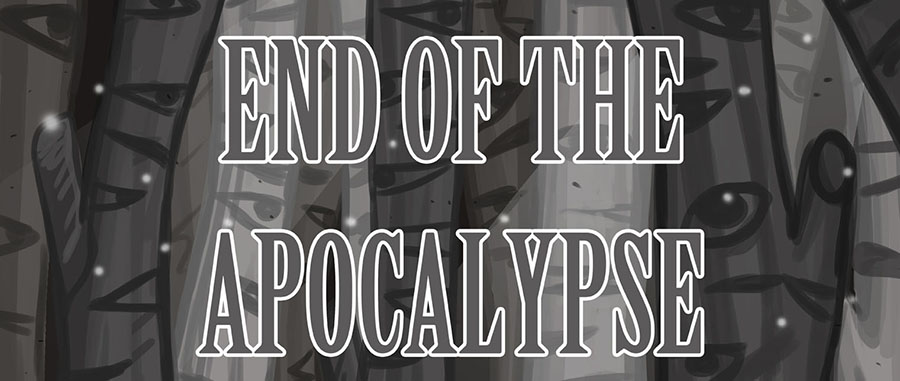

Voor mijn persoonlijke passieprojecten heb ik me toegewijd aan het creëren van twee prachtige graphic
novels.
Oorspronkelijk had ik de intentie om te werken aan een ander project dat meer interactie en gameplay zou
bevatten dan deze twee,
maar ik besloot uiteindelijk om mij te concentreren op deze twee boeken.
De verhalen die ik schrijf spelen zich allemaal af in dezelfde wereld en zijn met elkaar verbonden,
waardoor ik kan spreken van een multiversum.
Het is een uitdagende taak om ervoor te zorgen dat alle verhalen met elkaar verweven zijn en naadloos op
elkaar aansluiten,
maar het is ook een fascinerend proces dat me blijft inspireren.Hoewel ik me realiseer dat dit veel tijd en
inspanning vergt,
heb ik mijzelf toegewijd aan het afmaken van deze twee graphic novels en krijg ik ze waarschijnlijk niet
helemaal af.
INTRODUCTIE
"End of the Apocalypse" volgt een meisje terwijl ze door een post-apocalyptische wereld reist en haar visie op hoe de wereld eruit is komen te zien laat zien.

GESCHIEDENIS
In 2012 begon ik met het illustreren van een verhaal waarin niet gesproken wordt. Twee jaar later, in 2014, had ik het verhaal afgerond, maar ik voelde dat het nog niet helemaal af was en wist niet goed hoe ik het wilde uitgeven. Na een paar jaar nadenken besloot ik om er een interactieve comic van te maken. Als eerste, heb ik een parallax gemaakt voor een bos dat in het verhaal voorkomt. Het bos moest de lezer het gevoel geven dat ze zelf door het bos liepen, en daarom heb ik het gemaakt met behulp van HTML, CSS en JAVASCRIPT. Toen dit goed verliep en ik tevreden was, ben ik verder gegaan met nog een parallax en andere elementen eraan toe te voegen. Er hoeven nu alleen nog maar geluiden bij.
GITHUB
Githublink
PDF FILE
PDF FILE
DESIGN
KLEUREN
De kleuren die ik gekozen heb voor dit project zijn, bruin, wit en grijs en niet zonder reden.
Bruin
In de natuur wordt bruin vaak geassocieerd met de aarde, bomen en planten. Het is een kleur die de kringloop van het leven symboliseert, omdat het vaak wordt geassocieerd met de herfst en de afbraak van de natuur. Bruin kan ook worden gezien als een kleur die de verbinding met de natuur symboliseert, omdat het ons herinnert aan onze wortels en onze afhankelijkheid van de natuurlijke wereld. Ook wordt bruin vaak geassocieerd met stabiliteit, betrouwbaarheid en duurzaamheid. Het is een kleur die vaak wordt gebruikt om een gevoel van comfort en veiligheid op te roepen.Grijs
Symbolisch gezien kan grijs worden geassocieerd met neutraliteit, balans en compromis en om een kalme sfeer te creëren. Het kan ook staan voor volwassenheid, professionaliteit en autoriteit en is ook een tijdloze kleur.Wit
Wit is de kleur van puurheid, zuiverheid, onschuld en helderheid en symbolische kan wit worden geassocieerd met licht, waarheid, reinheid en spiritualiteit. In veel culturen wordt wit geassocieerd met vrede, zuiverheid en onschuld.FONTS
De font die ik gebruikt heb voor de titelpagina is Birch en vond ik wel een leuke "nod" naar de berkenbomen die voorkomen in het verhaal. Het is ook een mooie sierlijke letter, maar wel eentje die wat standvaster overkomt. Een beetje van beide werelden.